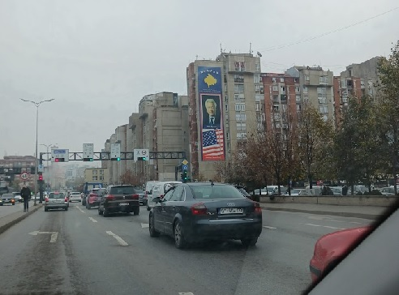
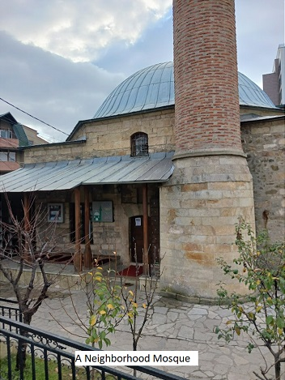
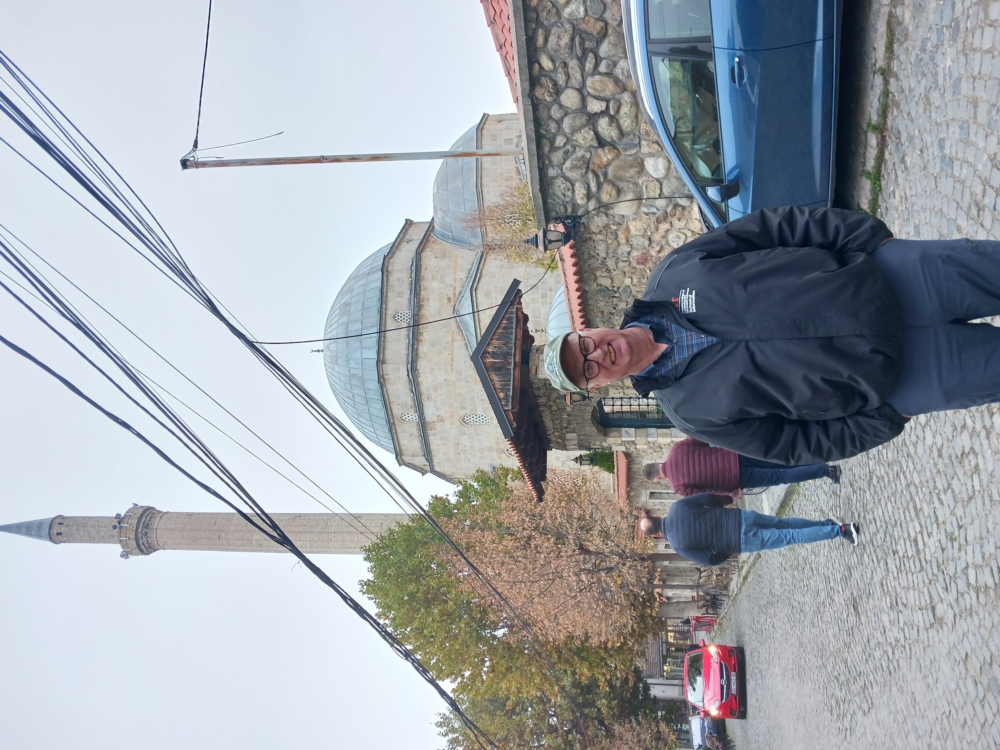
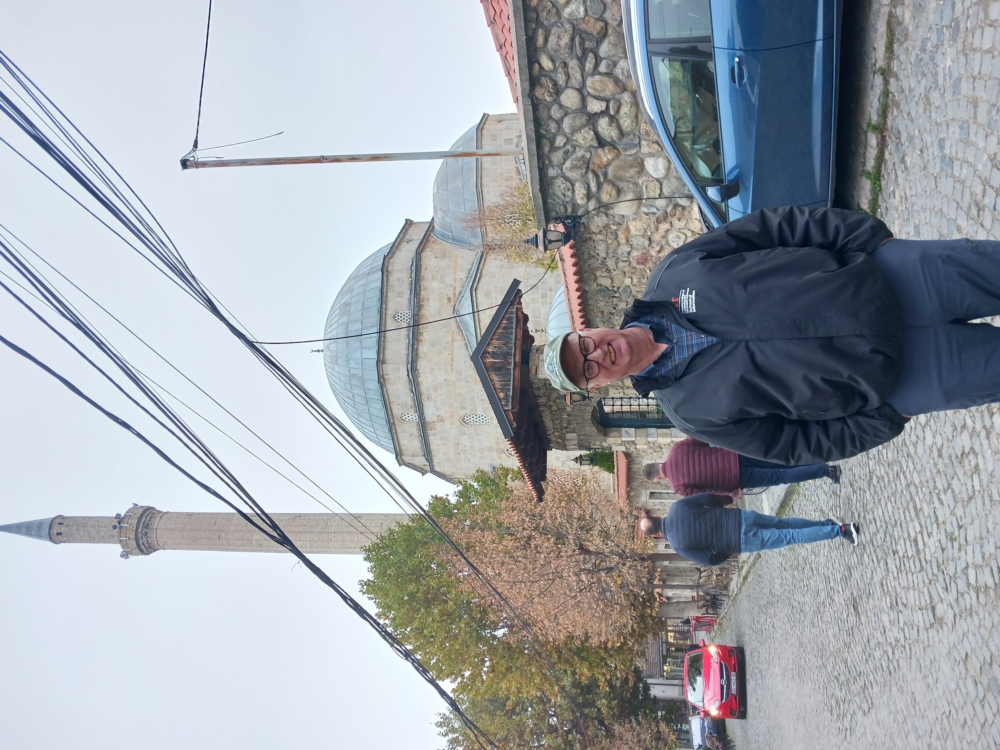
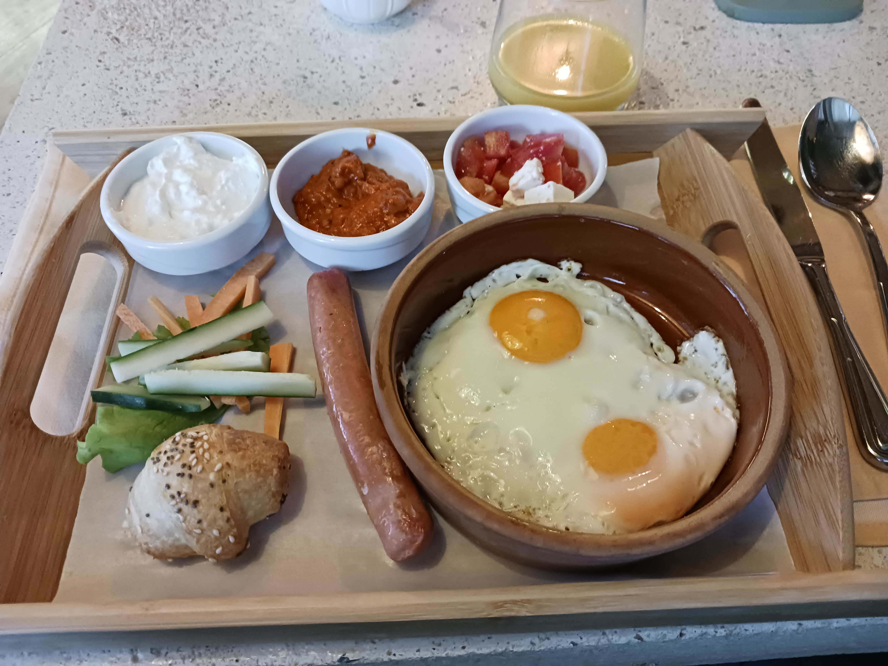
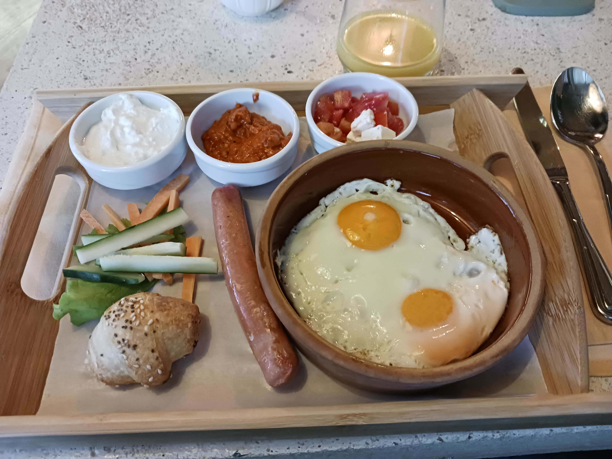

Modern History of Pristina
Pristina is the capital and largest city of Kosovo. The city's municipal boundaries in Pristina District form the largest urban center in Kosovo. After Tirana, Pristina has the second largest population of ethnic Albanians and speakers of the Albanian language.
Pristina is the economic, financial, political and trade center of Kosovo, due to its location in the center of the country. It is the seat of power of the Government of Kosovo, the residences for work of the President and Prime Minister of Kosovo, and the Parliament of Kosovo. Pristina is also the most important transportation junction of Kosovo for air, rail, and roads. Pristina International Airport is the largest airport of the country and among the largest in the region. A range of expressways and motorways, such as the R 6 and R 7, radiate out the city and connect it to Albania and North Macedonia
The Current Political Environment
The political situation in Kosovo was marked by ongoing challenges related to its status as a partially recognized state. Kosovo declared independence from Serbia in 2008, a move recognized by a significant number of countries, including the United States and many European Union members. However, Serbia, along with countries like Russia and China, does not recognize Kosovo's independence. Tensions between Kosovo and Serbia remained, with discussions focused on issues like border disputes and the normalization of relations. Internal political dynamics in Kosovo also included debates on governance, corruption, and economic development. Political stability was a key concern, with occasional protests and disputes hindering progress.
Religious and Secular Architecture
The architecture of Kosovo dates back to the Neolithic period and includes the Copper, Bronze and Iron Ages, Antiquity and the Medieval period. It has been influenced by the presence of different civilizations and religions as evidenced by the structures which have survived to this day. Local builders have combined building techniques of conquering empires with the materials at hand and the existing conditions to develop their own varieties of dwellings.
The monasteries and churches from the 14th century represent the Serbian Orthodox legacy. Architectural heritage from the Ottoman period includes mosques and hamams from the 15th, 16th and 17th centuries. Other historical architectural structures of interest include kullas from the 18th and 19th centuries as well as a number of bridges, urban centers and fortresses. While some vernacular buildings are not considered important in their own right, taken together they are of considerable interest. During the 1999 conflict in Kosovo many buildings that represent this heritage were destroyed or damaged. In the Dukagjini region, at least 500 kullas were attacked, and most of them destroyed or otherwise damaged.
During the 1990s and thereafter, thousands of illegal buildings have been built in Kosovo. Rexhep Luci, the urban planner of Pristina who started an initiative to face this problem was killed in September 2000.
 

Kosovar Cuisine
Kosovo cuisine reflects a rich tapestry of flavors, drawing influence from the diverse cultural and historical elements that have shaped the region. Traditional Kosovo dishes showcase a harmonious blend of Ottoman, Mediterranean, and Balkan culinary traditions. Grilled meats, particularly lamb and veal, are central to many meals, often seasoned with a mix of aromatic herbs and spices. One iconic dish is "qebapa," seasoned minced meat rolls, usually served with flatbread and a side of red pepper-based condiment called "ajvar." Dairy products hold a significant place in the cuisine, with yogurt and feta cheese being commonly used. Additionally, fresh produce, such as tomatoes, peppers, and eggplants, plays a vital role in Kosovo's culinary repertoire. "Flija," a layered pancake-like dish made with multiple crepes and served with cream, is a beloved dessert. The warmth of hospitality is reflected in the generous portions and the communal spirit of enjoying a meal together, making Kosovo cuisine a delightful exploration of flavors and cultural history.

 

Contact Us
We would love to hear from you at: Tourism in Kosovo.